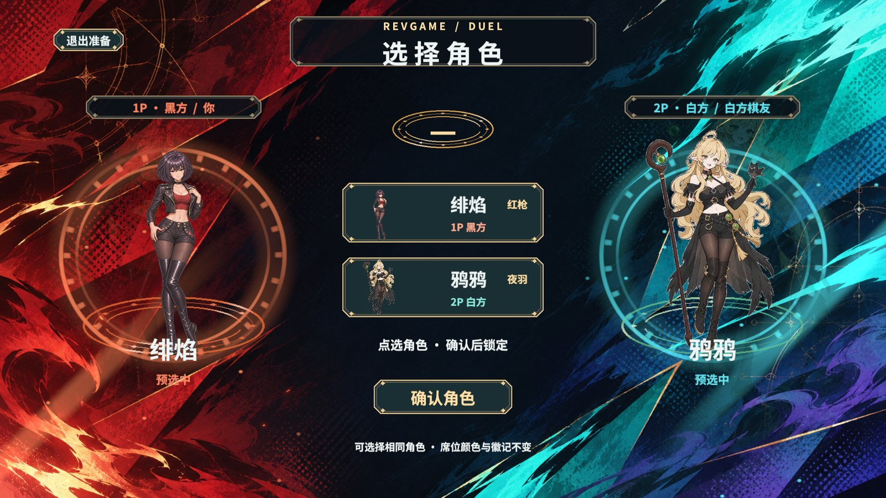
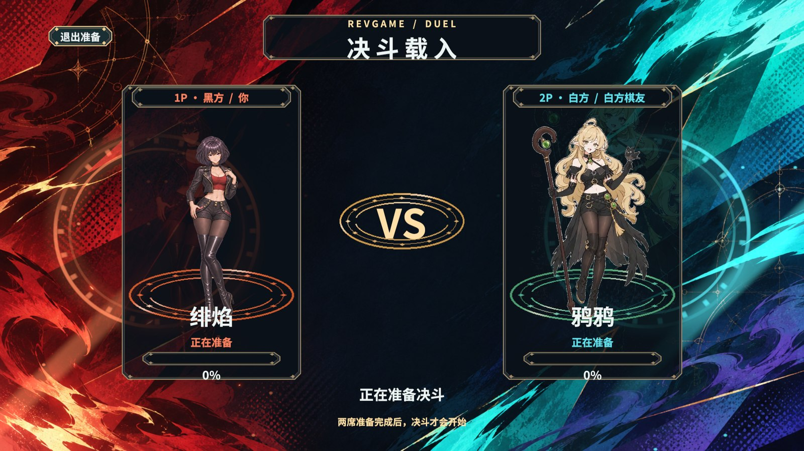
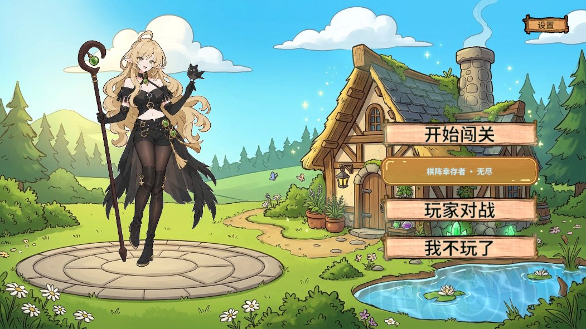
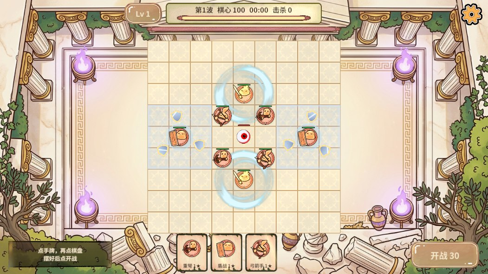
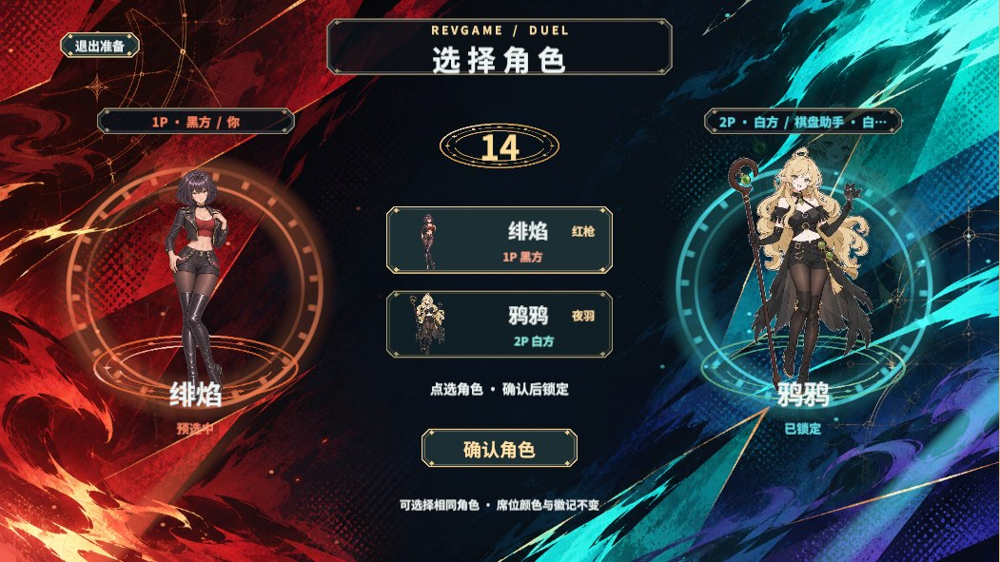
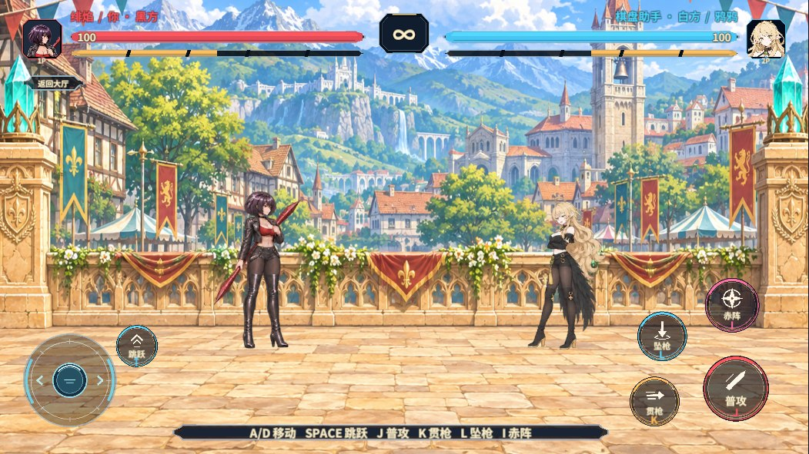
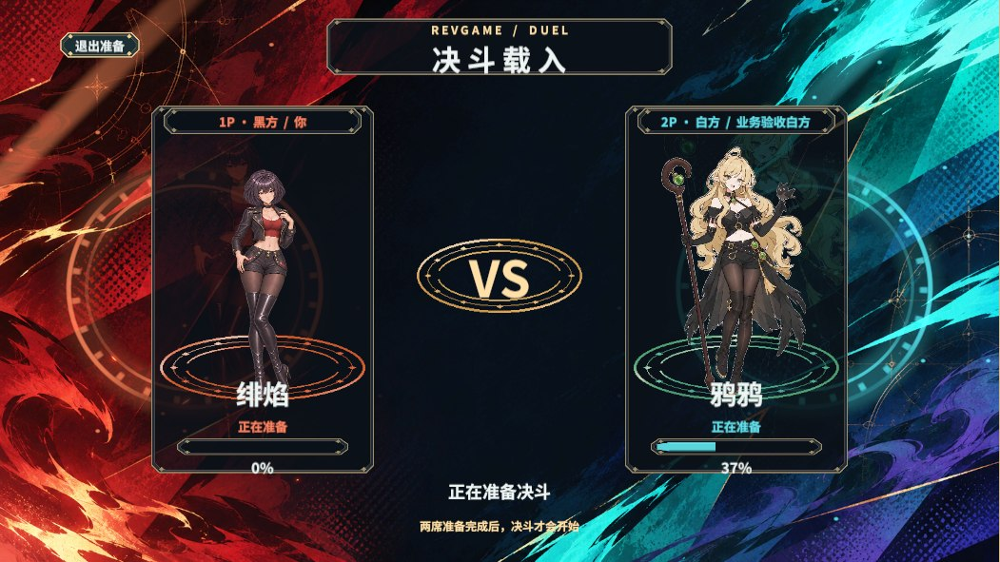
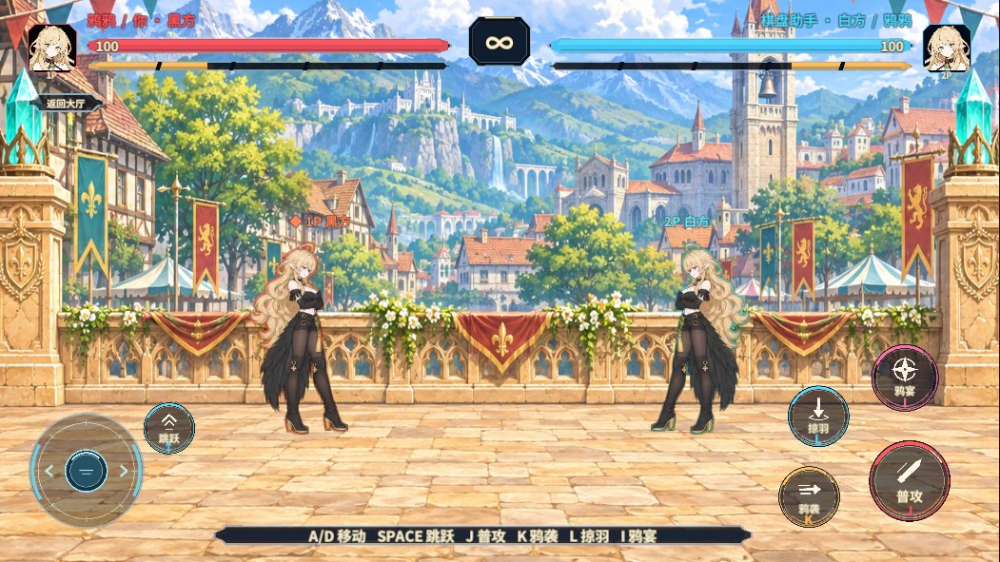
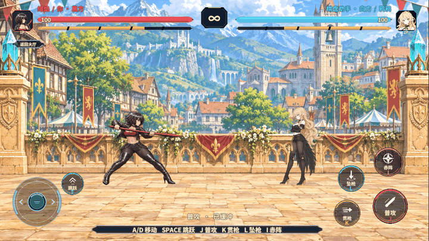
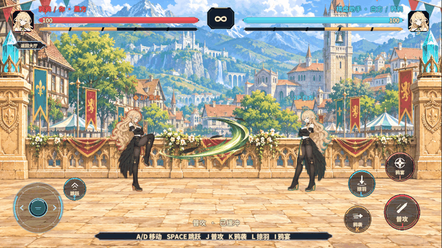

资产迁移
共移动 19 份材质和 1 个粒子预制体，逐项复核了 GUID。扫描 1703 个项目文件、87 份材质、63 个 Shader 资产和 211 个序列化资产。错放目录、缺失 Meta、孤立 Meta、重复 GUID 和无法解析的资源 GUID 都是 0。
| 用途 | 目录 | AB 归属 |
|---|
| 决斗选角和加载 | GameRes/Material/UI/PvpDuelPrep | ui_pvp_duelprep |
| 决斗擂台和粒子 | GameRes/Material/Pvp/DuelScene 和 GameRes/Effects/Pvp/DuelScene | 随内置场景交付 |
| 无尽 | GameRes/Material/Endless | endless_arena |
| 九路棋盘 | GameRes/Material/Pvp/Board | pvp_arena |
| 大厅小屋 | GameRes/Material/Lobby | lobby_cottage |
87个项目材质目录合规；保留503/669个Art资源，排除166个，打包24/27张图集；24张图集，351张图片唯一覆盖。338 份手写业务脚本的条件分支通过了独立花括号检查。PC 和 Android 分别按工程既有入口构建并核对资源映射。
执行结果
| 测试 | 结果 | 执行范围 |
|---|
| 大厅与无尽材质 | 通过 | 6 个执行步骤，2 个清理步骤 |
| 绯焰人机决斗 | 通过 | 26 个执行步骤，4 个清理步骤 |
| 联机选角和加载 | 通过 | 13 个执行步骤，5 个清理步骤 |
| 鸦鸦镜像重入 | 通过 | 36 个执行步骤，4 个清理步骤 |
| 联机帧指纹 | 通过 | 4 个执行步骤，3 个清理步骤 |
- 绯焰空挥动作 1,5,6，对手生命 100。左边界 -4500，持续按住共触发 1 次。技能命中后对手生命 85，本轮借用 18 个程序短效。
- 鸦鸦空挥动作 1,5,6，对手生命 100。左边界 -4500，持续按住共触发 1 次。技能命中后对手生命 85，本轮借用 17 个程序短效。
- 联机回归先复现白方帧号停在 0。客端改用已接纳的准备阶段判断后，重新验证了补帧和对账。
- UTP 双端首次周期对账在第 40 帧，终局在第 84 帧。主客对账帧分别为 84 与 84。
本地 C++ 与 C# 回归覆盖命中距离边缘、双方空挥、检查点恢复和逐帧一致性。手机端覆盖到 Android 原生库和 AB 构建。真实画面来自 Windows Editor Play 的 PC AB。大厅和无尽回归记录了 0 条 Unity 运行错误。
预制体和运行画面

选角预制体 · 1920×1080 离屏预览
加载预制体 · 1920×1080 离屏预览
真实 PC AB 冷启动大厅
隔离无尽局的棋盘与材质
真实 PC AB 选角画面
绯焰与鸦鸦进入晴天擂台
联机加载停在白方 37%
鸦鸦镜像重入
绯焰的空挥与擂台运动连拍
鸦鸦的空挥与擂台运动连拍框架接入
GameFlow 使用 RevScene 交接物理场景，使用 RevUI 打开选角、加载和战斗 HUD，图集通过 GameSpriteAtlasService 和 RevResManager 按需持有。舞台短效使用 RevPool。画面、动画和运镜消费已确认快照，原生内核负责移动边界与伤害。
新擂台由内置 imagegen 生成。提示词指定晴天下的宽幅中世纪奇幻小镇、横向石台、两侧青色晶柱和供角色移动的连续地面。运镜参考 用户给出的对打片段、拳皇 XV 与 生或死 6 场地。